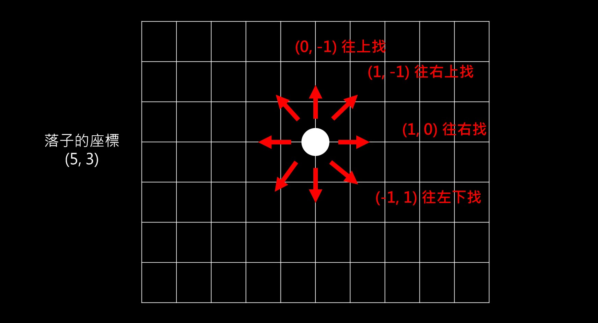

只是想記一下，因為我想了好久卻沒想出來。
簡述
前幾天剛做完 五子棋 這份作業。
但因為我想了很久都想不出「斜線」的解法，所以特地開這篇來記錄一下這個很棒的解法。
思路解釋
先說一下我原本的思路吧。
我的想法是透過「整個棋盤」來判斷輸贏，講白話一點就是「每一次都把整副棋盤看過一遍」，找出誰達成連線就誰就贏了。
所以就寫了這樣的 code（只是大概寫一下概念）：
1 | // 附註：board 是一個二維陣列 |
總之，這個方法顯然不是很好，也不聰明。所以接著來看看另一種思路吧，這個思路只要想清楚以後就會覺得很直覺。
首先，分出勝負的時機點一定是出現在「下了某一支棋」的情況，這代表什麼？代表其實只需要看這隻棋的附近是不是有可以跟它湊成連線的棋就好，這樣就不用整個看過一遍了。
如果你的棋盤是用二維陣列來存的，就應該會有 x 軸和 y 軸這兩個資訊，接著只要給它一個「方向」就好，告訴它我要往哪個方向去看，像這樣：

知道方向以後，只要用一個迴圈就可以達成搜尋的效果了：
1 | function countTotal(board, currentX, currentY, directionX, directionY) { |
接下來就只要對每個方向做計算就好了：
1 | function calculateWinner (board, x, y) { |
關於平手的部分如果看不太懂，可以這樣想就好 board.every(true / false)，裡面放 true 就會回傳 true，反之則 false。
而我們在裡面做的事情只是去檢查 row 裡面的 col 是不是都有值，如果都有就會回傳 true 代表棋盤已經放滿了，所以是平手。
以上就是判斷輸贏的思路，希望我哪天也能只靠自己就想出這種解法 QQ